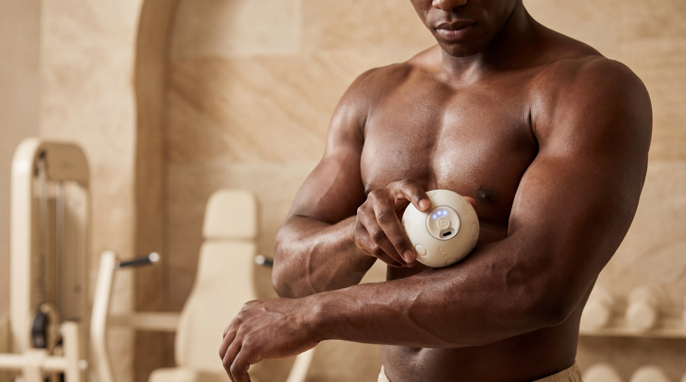

Personalised Movement
Shape recovery around your own rhythm, with movement-led pulse pattern customisation, expressive styling, and a more personal way to feel each session.
Go smart, playful recovery.


THE OMGO FAMILY
Your recovery should feel more personal, tactile, and easy to return to, whether you want something playful & expressive, or compact & functional.
Shape recovery around your own rhythm, with movement-led pulse pattern customisation, expressive styling, and a more personal way to feel each session.
Built to feel satisfying in the hand, with a quiet yet powerful vibration experience that shaped around touch, texture, and physical interaction.
Designed for real routines, from training, work, travel, to daily reset moments, helping recovery become enjoyable and habit-forming.
FOUNDER-LED ENGINEERING
OMNX is a UK-based, founder-led original recovery technology brand built through hands-on work across product design, electronics, mechanics, materials, firmware, and real-world user testing. It began with a simple question: what if recovery could feel more personal, tactile, and less like cold fitness equipment?
Many devices focus on speed, strength, and utility alone. OMNX starts from a different belief: recovery should not feel like another cold fitness task. It should feel personal, tactile, and naturally part of daily movement.
Built Through Founder-Led Engineering.
That is why we invested 3000+ hours into prototyping, testing, and refining OMGO handheld percussive massagers as a ground-up recovery experience, so recovery can inspire movements & be active instead of feeling like another routine to follow.
The long-term vision is an AI-driven recovery platform that connects physical devices via Bluetooth with smarter guidance, personal routines, and human-centred recovery data.